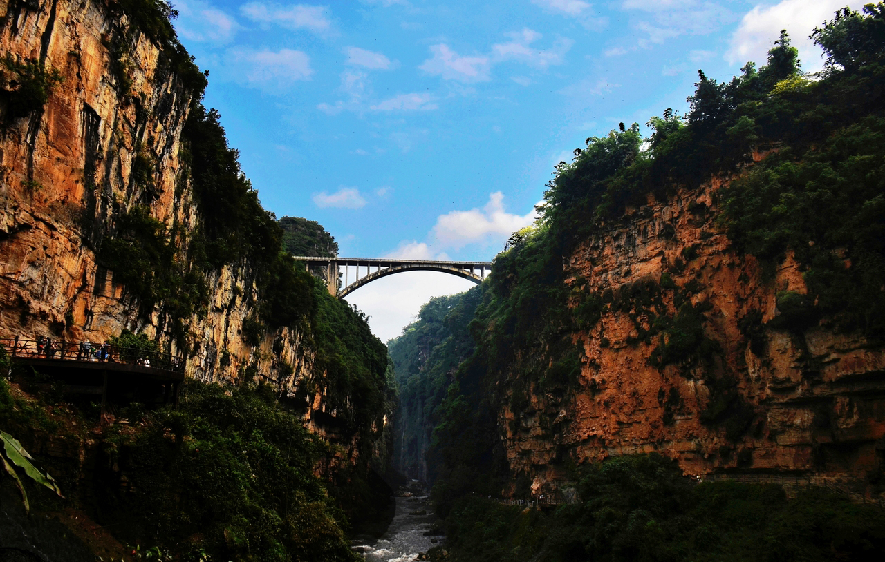
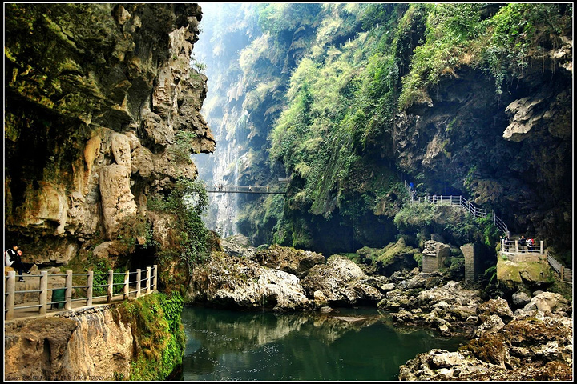
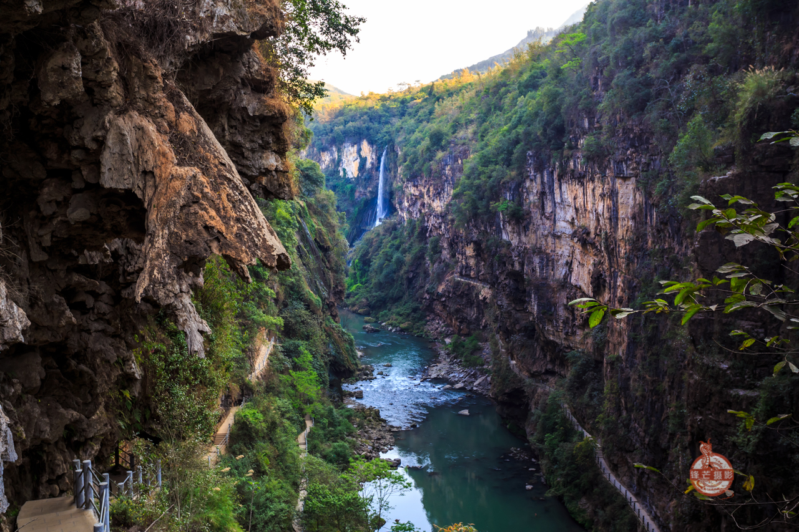
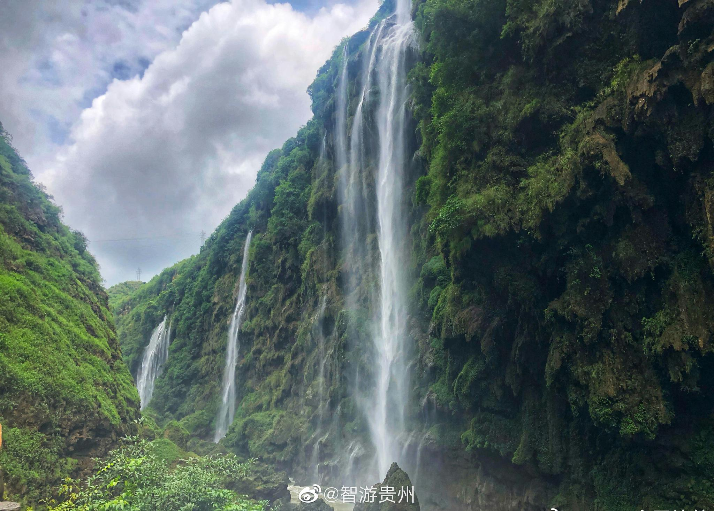
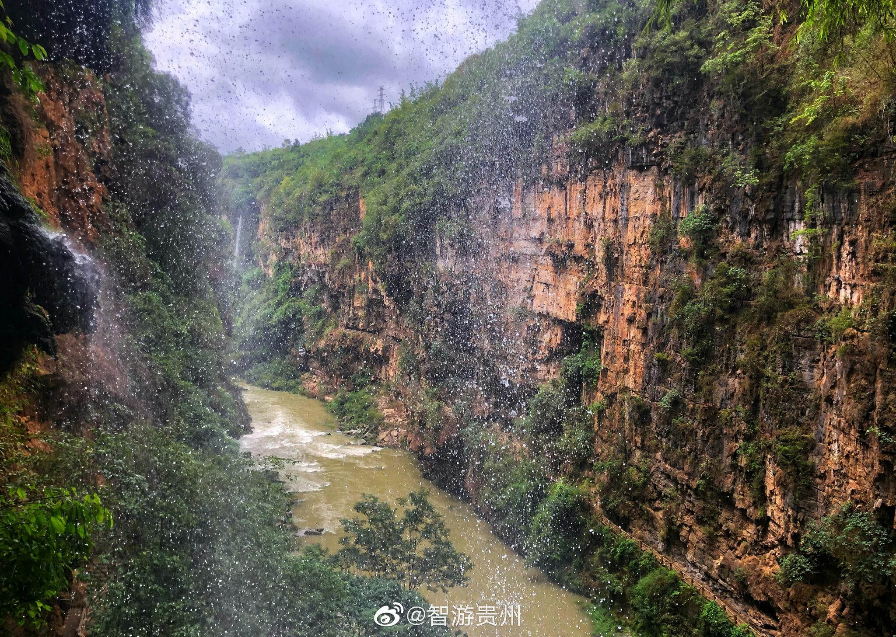

关于马岭河峡谷
兴义马岭河峡谷，被誉为“地球最美丽的伤疤”。峡谷深邃，瀑布众多，地缝景观惊险刺激。必看：万马奔腾瀑布群，体验峡谷漂流。
Xingyi Malinghe Canyon, hailed as "Earth's most beautiful scar." Deep canyons, numerous waterfalls, and thrilling fissure landscapes. Must-sees: Ten Thousand Horses Galloping Waterfalls, experience canyon rafting.
Canyon de Xingyi Malinghe, salué comme « la plus belle cicatrice de la Terre ». Canyons profonds, nombreuses cascades et paysages de fissures palpitants. À voir absolument : Cascades des Dix Mille Chevaux Galopants, vivez le rafting en canyon.





主要特色
- 瀑布群：数量众多，形态各异的瀑布。
- 峡谷风光：险峻奇特，引人入胜。
- 漂流：惊险刺激的水上活动（季节性）。
- 钙化壁画：独特的自然地质奇观。
游玩小贴士
建议游玩时间2-3小时，若参与漂流则需更长时间。雨季水量充沛，瀑布更为壮观。徒步请注意安全，穿着防滑鞋。